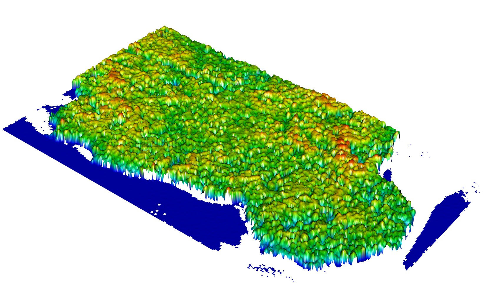
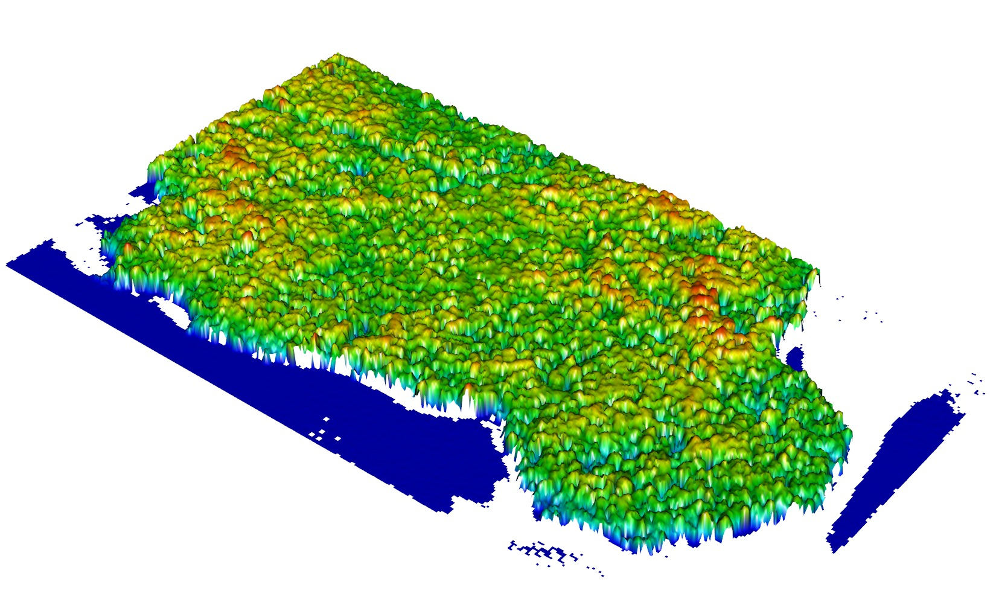

Digital model of canopy
Default usage
canopyModel creates a canopy surface model using a LiDAR cloud of points. The algorithm uses the local maximum algorithm, it assigns the elevation of the highest return within each grid cell to the grid cell center. It returns an object of class gridMetrics. A gridMetrics is a data.table and therefore a data.frame but because it is also a gridMetrics object you can plot it easily in 2D or 3D.
canopy = canopyModel(lidar)
plot(canopy)
plot3d(canopy)
 

Resolution
canopyModel has an optional parameter resolution. The cell size is the square of the resolution.
canopy = canopyModel(lidar, resolution = 4)